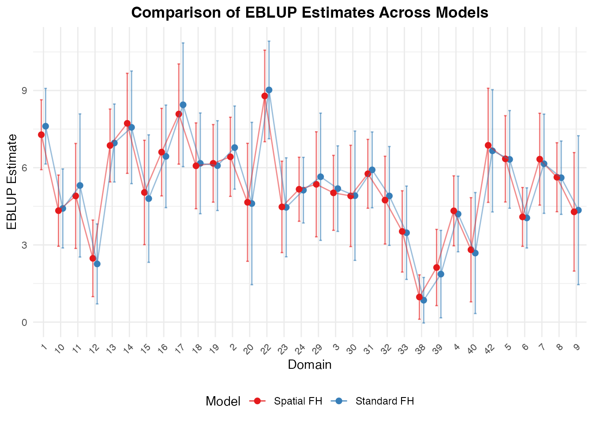

Overview
When small areas are geographic units (such as counties, regencies, or districts), spatial correlation frequently occurs: neighboring areas tend to have more similar outcomes than distant ones. Furthermore, when surveys are repeated over multiple years, temporal correlation between time periods is also present.
fastsae provides specialized, high-performance
implementations for both: 1. Spatial Fay-Herriot
(eblup_sfh): Simultaneous Autoregressive SAR(1)
random effects. 2. Spatio-Temporal Fay-Herriot
(eblup_stfh): Combined spatial SAR(1) and temporal
AR(1) random effects.
1. Spatial Fay-Herriot Model (eblup_sfh)
Model Formulation
The Spatial Fay-Herriot model (Pratesi & Salvati, 2008) models area random effects using a Simultaneous Autoregressive (SAR(1)) process:
where: - is a known row-standardized spatial proximity matrix (). - is the spatial autoregressive parameter. - is independent innovation noise. - is sampling error with diagonal matrix .
Fitting the Model
library(fastsae)
data("mys")
data("mys_proxmat")
# Fit Spatial Fay-Herriot model with REML
fit_sfh <- eblup_sfh(
formula = y ~ x1 + x2 + x3,
vardir = ~vardir,
data = mys,
W = mys_proxmat,
method = "REML",
print_result = FALSE
)
summary(fit_sfh)
#>
#> ── Summary of fastsae Fit ──────────────────────────────────────────────────────
#> Call :
#> eblup_sfh(formula = y ~ x1 + x2 + x3, vardir = ~vardir, data = mys, method =
#> "REML", W = mys_proxmat, print_result = FALSE)
#>
#> ✔ Convergence: Yes (in 8 iterations)
#> Model: Spatial Fay-Herriot (Area-level SAR)
#> Method: REML
#>
#> Variance & Correlation Components:
#> parameter estimate std.error
#> sigma2_u 1.493692 1.095052
#> rho -1.000000 10.836726
#>
#> Coefficients:
#> beta std.error zvalue pvalue
#> (Intercept) 3.03659649 0.62669962 4.84537788 0.0000
#> x1 -0.00085935 0.00824230 -0.10426151 0.9170
#> x2 0.04983809 0.05273618 0.94504545 0.3446
#> x3 0.03929798 0.05006522 0.78493574 0.4325
#>
#> Goodness of Fit:
#> loglikelihood AIC BIC
#> -65.02194 142.04389 150.83830
#>
#> EBLUP Summary Statistics:
#> eblup mse rse
#> Min. :0.9736 Min. :0.1936 Min. : 9.512
#> 1st Qu.:4.1867 1st Qu.:0.5725 1st Qu.:13.224
#> Median :4.9636 Median :0.8264 Median :19.840
#> Mean :5.0375 Mean :1.0470 Mean :21.974
#> 3rd Qu.:6.1456 3rd Qu.:1.3772 3rd Qu.:30.137
#> Max. :8.7887 Max. :2.3507 Max. :45.188Unsampled Domains and Spatial Kriging
A major advantage of eblup_sfh in
fastsae is its automatic handling of unsampled domains
(domains with y = NA). Instead of throwing an error or
requiring manual subsetting, eblup_sfh automatically
performs full-spatial kriging:
# Count sampled vs unsampled domains
table(is.na(mys$y))
#>
#> FALSE TRUE
#> 32 10
# Inspect estimates for unsampled domains
head(fit_sfh$df_eblup[is.na(mys$y), ])
#> domain y vardir eblup random_effect mse rse
#> 21 21 NA 0 3.660260 0 1.904961 37.70779
#> 25 25 NA 0 4.153888 0 1.862352 32.85309
#> 26 26 NA 0 5.305132 0 2.206307 27.99863
#> 27 27 NA 0 4.300605 0 1.872941 31.82237
#> 28 28 NA 0 5.039354 0 1.824374 26.80292
#> 34 34 NA 0 3.491430 0 1.853401 38.99253For unsampled areas, prediction borrows strength from both the regression synthetic component and spatial proximity to neighboring sampled areas through .
Multi-Threaded Bootstrap MSE
In addition to analytical Prasad-Rao style MSE,
eblup_sfh supports multi-threaded OpenMP bootstrap MSE
estimation:
- Parametric Bootstrap
(
mse_method = "pbmse") - Non-Parametric Bootstrap
(
mse_method = "npbmse")
fit_sfh_pb <- eblup_sfh(
formula = y ~ x1 + x2 + x3,
vardir = ~vardir,
data = mys,
W = mys_proxmat,
mse_method = "pbmse",
B = 50,
n_threads = 2,
seed = 123,
print_result = FALSE
)
#> ℹ 10 unsampled domain(s) detected. Bootstrap MSE (pbmse) is computed for the 32 sampled domain(s); unsampled domain(s) get a full-spatial synthetic (kriging) prediction and analytical MSE instead.
head(fit_sfh_pb$df_eblup[, c("domain", "y", "eblup", "mse", "mse_pb", "mse_pbbc")])
#> domain y eblup mse mse_pb mse_pbbc
#> 1 1 8.359527 7.282308 0.4797992 0.5043246 0.6019482
#> 2 2 7.599650 6.423856 0.6156692 0.4362874 0.6860557
#> 3 3 5.514137 5.023421 0.5519476 0.6400385 0.7173447
#> 4 4 3.869326 4.324716 0.4811841 0.4962733 0.5593804
#> 5 5 6.305063 6.344991 0.7315241 0.5816691 0.8868638
#> 6 6 3.926807 4.087497 0.3403445 0.4636404 0.37292642. Spatio-Temporal Fay-Herriot Model (eblup_stfh)
Model Formulation
The Spatio-Temporal model (Marhuenda, Molina, & Morales, 2013) combines spatial correlation and temporal autoregression across a balanced panel of areas observed over time periods:
where: - captures static spatial effects: . - captures dynamic temporal effects for area : . - are sampling errors.
Fitting the Spatio-Temporal Model
data("mys_panel")
# Prepare balanced panel without missing values
panel_data <- mys_panel[!is.na(mys_panel$y) & mys_panel$year >= 2024, ]
W_sub <- mys_proxmat[-c(21, 25), -c(21, 25)]
# Fit Spatio-Temporal model with bootstrap MSE
fit_stfh <- eblup_stfh(
formula = y ~ x1 + x2 + x3,
data = panel_data,
vardir = ~vardir,
domain = ~area,
time = ~year,
W = W_sub,
model = "ST",
compute_mse = TRUE,
B = 25,
seed = 42,
print_result = FALSE
)
summary(fit_stfh)
#>
#> ── Summary of fastsae Fit ──────────────────────────────────────────────────────
#> Call :
#> eblup_stfh(formula = y ~ x1 + x2 + x3, vardir = ~vardir, data = panel_data,
#> domain = ~area, time = ~year, W = W_sub, model = "ST", compute_mse = TRUE, B =
#> 25, seed = 42, print_result = FALSE)
#>
#> ✔ Convergence: Yes (in 12 iterations)
#> Model: Spatio-Temporal Fay-Herriot (ST-FH)
#> Method: REML
#>
#> Variance & Correlation Components:
#> estimate std.error
#> 0.0000000 3.3656683
#> -0.9990000 10.2860936
#> 2.2451375 0.7260280
#> 0.5738458 0.4727148
#>
#> Coefficients:
#> beta std.error zvalue pvalue
#> (Intercept) 3.7498891 0.4538487 8.2624211 0.0000
#> x1 -0.0053032 0.0046392 -1.1431391 0.2530
#> x2 0.0606926 0.0258702 2.3460387 0.0190
#> x3 0.0173309 0.0257334 0.6734780 0.5006
#>
#> Goodness of Fit:
#> loglike AIC BIC
#> -243.6043 503.2087 525.5086
#>
#> EBLUP Summary Statistics:
#> eblup mse rse
#> Min. :-0.729 Min. :0.1885 Min. : 7.866
#> 1st Qu.: 4.661 1st Qu.:0.5410 1st Qu.: 12.858
#> Median : 5.465 Median :0.7642 Median : 15.707
#> Mean : 5.424 Mean :0.8911 Mean : 20.922
#> 3rd Qu.: 6.244 3rd Qu.:1.0287 3rd Qu.: 19.913
#> Max. : 9.203 Max. :3.2885 Max. :276.605The estimated variance and correlation components include: -
sigma21: Spatial random effect variance
().
- rho1: Spatial autocorrelation
().
- sigma22: Temporal random effect variance
().
- rho2: Temporal AR(1) autoregression coefficient
().
3. Comparing Models with autoplot
You can directly compare EBLUP estimates and uncertainty across
different models using autoplot():
# Compare Fay-Herriot vs Spatial Fay-Herriot
fit_fh <- eblup_fh(y ~ x1 + x2 + x3, vardir = ~vardir, data = na.omit(mys), print_result = FALSE)
W_clean <- mys_proxmat[!is.na(mys$y), !is.na(mys$y)]
fit_sfh_clean <- eblup_sfh(y ~ x1 + x2 + x3, vardir = ~vardir, data = na.omit(mys), W = W_clean, print_result = FALSE)
autoplot(list("Standard FH" = fit_fh, "Spatial FH" = fit_sfh_clean), type = "comparison")
References
- Marhuenda, Y., Molina, I., & Morales, D. (2013). Small area estimation with spatio-temporal Fay-Herriot models. Computational Statistics & Data Analysis, 58, 308–325.
- Pratesi, M., & Salvati, N. (2008). Small area estimation for spatially correlated data: A Fay-Herriot with the spatial linear spline model. Journal of Applied Statistics, 35(7), 781–794.